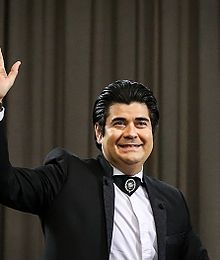
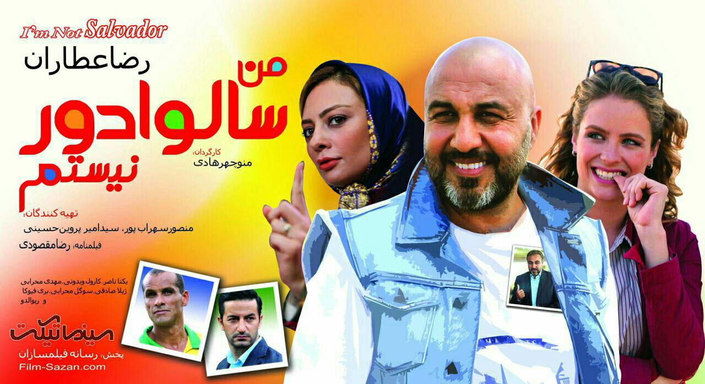
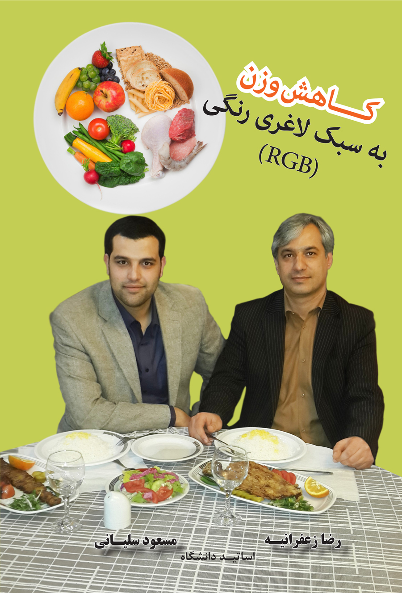

سلام، دکتر رضا زعفرانیه هستم.
به صفحه علاقه مندی های اینجانب خوش آمدید!
موسیقی را دوست دارم بخصوص صدای آواز سالار عقیلی .
به ترانه نوروز آمد سالار عقیلی گوش دهید.
دیدن فیلم های کمدی ،بخصوص فیلم های آقای رضا عطاران را دوست دارم .
تیزر تبلیغاتی فیلم سالوادور را ببینید .
به مطالعات در حوزه تغذیه و تندرستی علاقه خاصی دارم و در این خصوص کتابهایی را تالیف کرده ام . سه تا از کتابهای اینجانب :
